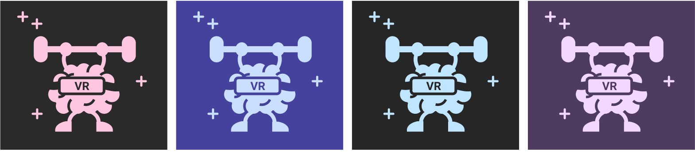

Current Research at Carnegie Mellon University
Are you interested in participating in the Virtual Reality Exergame study?

What should you expect if you decide to participate?
Your participation is completely voluntary; all of our researchers are extensively trained and have completed certified training for testing human subjects. What you can expect is participating in a few cognitive games and a virtual reality video game in which you will be slicing blocks to the beat of songs using lightsabers, similar to the game Fruit Ninja (developed by Halfbrick), but immersed into a 3D world!
We invite students to participate in our research by visiting our lab for three consecutive days on Carnegie Mellon University's campus. Your visits will be approximately 60 minutes, you will have complimentary parking right next to our lab, and you will receive a thank you gift for participation (a fun t-shirt supporting science and exercise!). We are currently inviting 18- to 24-year-olds to participate in our research on campus.
How can you sign up for one of our studies?
If you are interested in participating in our study, please e-mail our Study Director Maanasi Bulusu at mbulusu@andrew.cmu.edu, or our Lab Manager Sonja Hunter at cogdevlab@andrew.cmu.edu with the subject line: "VR Study Participation"
Where is the Research Lab?
We are located in Margaret Morrison, adjacent to Carnegie Mellon’s Children’s School. Please click here for a map and directions.
Thank you for your interest and participation!
August 2016-present
Advisors: Dr. Anna Fisher & Dr. Erik Thiessen
Cognitive Development Lab
Infant Language and Learning Lab
Current Studies

Exergame Study:
Exergames are a generation of video games that stimulate cognitive and motor functions simultaneously. This study examines the separate and combined effects of exercise and cognitive stimulation on children’s executive function (EF) and associated neural substrates. Children participate in an Exergame (exercise + cognitive activity), Exercise (physical activity), Sedentary (cognitive activity), or Control (no-play) Condition. Resting-state prefrontal cortex connectivity utilizing fNIRS, behavioral assessments of EF, and teacher ratings of EF are assessed pre- and posttest. This study elucidates the neural mechanisms underlying changes in EF induced from exergame play.
The Longitudinal Noninvasive NeuroImaging Study:
This study is a longitudinal, microgenetic study that monitors changes in resting-state prefrontal cortex functional connectivity and executive function abilities of 4- to 5-year-old over multiple time points to investigate the development of executive function skills, resting-state prefrontal cortex functional connectivity, and the association between neural development and executive function development within the same group of children over time. A replication experiment with adults serves to validate the resting-state functional connectivity measure (Inscapes) utilizing a neuroimaging modality outside of fMRI.

The Virtual Reality Neuroplasticity Study:
This study examines the effects of immersive virtual experiences on cognition and neuroplasticity in low-income youth by experimentally modifying versions of a popular commercially-available virtual reality game: Beat Saber, with meticulous manipulations to the amount of physical activity and cognitive demands.
The Reading Study:
This study examines the impact of varying visual presentations in educational e-books on first and second graders’ developing reading skills and utilizing eye-tracking technology to extract eye gaze patterns and investigate the attention allocation of beginning readers. This study provides theoretical insights about design principles for reading materials that can be employed to optimize educational materials and promote literacy development in young children.

❮ ❯
The Interactive iPad Study
This study investigated how to instill the practices of high quality adult-child interactions in interactive digital technologies to improve learning outcomes.
Featured in Carnegie Mellon University's News Highlights and in The National Science Foundation (NSF) News